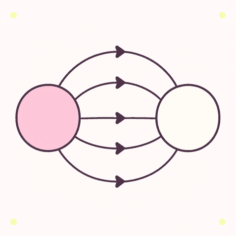

Electric Fields & Coulomb’s Law
Charges push and pull on each other across empty space. This chapter is the lecture in three sections: what charge is, how hard it pushes (Coulomb's law), and how to map that push around it (the electric field).
The lecture's own arc: charge and its two rules, Coulomb's law with superposition in 1-D and 2-D and the Bohr atom, then the electric field E = F/|q₀|, field lines and the two-charge y-axis example. Every worked number is computed live with k = 8.99×109 N·m2/C2, the lecture's value.

+ −2.1Electric Charge
Everything is full of tiny charged bits. Rub two things together and some bits move — that moved charge is static electricity, and it follows two rules that never break.
Charge is the property of matter behind every electric push and pull. It comes in two signs, it arrives in indivisible parcels of e, and it is never created or destroyed — only moved. This lesson names the players (proton, electron, neutron), the two rules (like/unlike, conservation) and the two material families (conductors, insulators) that the rest of the lecture builds on.
Learning objectives
- State the two kinds of charge, who carries them, and the attract/repel rule.
- Use q = n·e and the conversions e = 1.602×10−19 C, 1 C = 6.24×1018 electrons.
- Apply conservation of charge to rubbing and to conductors touching.
- Distinguish conductors from insulators and explain polarisation.
Summary
- Two kinds of charge: proton +, electron −, neutron 0.
- Like repels, unlike attracts.
- Charge is quantised (whole multiples of e) and conserved (it only ever moves).
- Conductors let charge roam; insulators hold it where you put it.
The easy version
Everything around you is packed with tiny charged bits. Usually the positives and negatives balance exactly, so nothing happens. Rub a balloon on your hair and it scoops some negatives off — the balloon takes, the hair gives. Now the balloon behaves like a sticky sock on a wall: opposites pull together, likes push apart.
Here is the secret worth remembering: rubbing never makes charge. It only moves charge that was already there. Whatever the balloon gains, your hair loses — the total never changes, no matter what you do. That is why the playground below has a tally that literally cannot be broken.
Some materials, like metal, let charge wander freely — those are conductors. Rubber, glass and dry hair grip it tight — insulators. That is why static cling survives a whole winter day.
The full version
- Charge (q)
- The property of matter that feels electric pushes and pulls. SI unit: the coulomb (C). The proton carries +e, the electron −e, the neutron 0.
- Elementary charge (e)
- e = 1.602×10−19 C — the smallest free-standing parcel of charge. Quantisation: every observable charge is q = n·e with n a whole number.
- Conservation
- In any process — rubbing, touching, separating — the total charge before equals the total after. Charge moves between objects; it is never created.
- Conductor
- A material where charge moves easily (metals, salt water, your body). Excess charge on a conductor spreads over its surface.
- Insulator
- A material where charge stays put (rubber, glass, dry air, plastic).
- Charging by friction
- Contact plus rubbing transfers electrons; the material higher on the triboelectric series loses them and ends up positive.
- Polarisation
- A charged object near a neutral one shifts that object’s charges slightly — the nearer, opposite charge wins because the force is stronger up close — so the pair attracts. This is why a rubbed balloon sticks to an uncharged wall.
n = q / e = 1 C ÷ 1.602×10−19 C = 6.24×1018 electrons
A coulomb is enormous. Ordinary static involves microcoulombs (µC = 10−6 C), and even a lightning strike moves only a few tens of coulombs.
Two identical spheres carry +6 µC and −2 µC. They are touched together, then separated. What does each carry?
total = (+6) + (−2) = +4 µC → identical spheres share equally: +2 µC each
The balloon sandbox below plays this exact move — charge moves, the total never changes.
Common mistakes
1. “Neutral means no charges.” Neutral means equal + and − — a crowded balance, not an empty room.
2. “Rubbing creates charge.” It transfers electrons; the two objects end up equal and opposite.
3. “Conductors can’t hold static charge.” They can — when isolated on an insulating handle. Held in your hand, your body drains them.
4. “Protons move around.” In solids only electrons move; protons stay locked in nuclei.
Real world
The spark from a door handle after a carpet walk is a few thousand volts driving charge across a millimetre of air. Lightning is the same process at kilometre scale: collisions between ice particles separate charge inside a storm cloud until the field exceeds about 3×106 V/m, the breakdown strength of air.
Symbols & units — defined once, used in all three lessons
| Symbol | Meaning | Unit / value |
|---|---|---|
| q, q₁, q₂ … | a charge (subscripts just count them) | coulomb, C |
| q₀ | test charge (small, positive by convention) | C |
| e | elementary charge — the quantum of charge | 1.602×10−19 C |
| n | whole number of elementary charges | — (a count) |
| F | electric force | newton, N |
| r | centre-to-centre distance | metre, m |
| k | Coulomb constant | 8.99×109 N·m²/C² |
| E | electric field | N/C |
| v | speed | m/s |
| mₑ | electron mass | 9.109×10−31 kg |
| µ | prefix micro = 10−6 | 1 µC = 10−6 C |
Try it — one sandbox, two toys
Goal-free by default. The ★ challenges are optional; nothing ever blocks your play, and every setup copies to a shareable link.
Simulation · Rub the Balloon
q = n·e — one electron parcel at a time
Drag the balloon onto the hair and rub back and forth. Each stroke moves whole electrons; the counters tick in exact lockstep. Then park it near the paper bits.
0 electrons moved
q = n·e
What you just discovered: rubbing only moves electrons — the two counters are always exact opposites. Back to the summary
2.2Coulomb’s Law
Charges push and pull on each other across empty space. One equation says exactly how hard — and the arena below lets you feel it with your hands.
The force between two point charges is the lecture’s workhorse: inverse-square in the separation, linear in each charge, attractive or repulsive by sign, and always a Newton’s-third-law pair. With three or more charges the forces superpose as vectors — the skill the arena’s component ghosts train live, all the way to the Bohr atom.
Learning objectives
- State Coulomb’s law with units, and apply it to point charges.
- Predict how F changes when a charge or the separation changes.
- Compute net forces by vector superposition in 1-D and 2-D.
- Derive the Bohr electron speed from Coulomb force = centripetal force.
Summary
- Every charge pushes or pulls every other charge (the Lesson 1 rule — now with a number).
- The force dies with the square of distance: 2× r → ¼ F.
- Signs pick the direction only; the magnitude uses |q₁q₂| and is never negative.
- Several forces on one charge add as arrows (components), never as plain numbers.
The easy version
Two charges are like two skaters facing each other. Same-style skaters push apart; opposite ones pull together — and the interesting part is distance. Step back to twice the distance and the push does not halve — it drops to a quarter. Three times away, a ninth. Up close is where all the drama lives.
Bigger charges shove harder: double one charge, double the force. And the push is always mutual — a tiny charge shoves a huge one exactly as hard as the huge one shoves it, just the other way round, like skaters pushing off each other.
With three or more charges around, each one tugs or pushes on its own. To find the total effect on any single charge, add the pushes as arrows with direction — like the tug-of-war arena below, where you can feel the rope change as you drag.
The full version
In 1785 Coulomb measured the force between small charged spheres with a torsion balance and found an inverse-square law that looks exactly like Newton’s gravitation — but roughly 1036 times stronger, and able to repel as well as attract. It holds for point charges (and for uniform spheres, with r measured centre-to-centre). Three things to notice:
- Inverse-square: double r → F/4; triple r → F/9.
- Magnitude uses |q₁q₂|: F is never negative; the signs only steer the arrow (like → repel, unlike → attract).
- Newton’s third law: the two forces are equal and opposite even if one charge is a thousand times bigger.
With three or more charges, each pair interacts independently and the net force on any one charge is the vector sum — resolve each force into x/y components, add components, then rebuild:
q₁ = +1 C, q₂ = −1 C, r = 1 km = 10³ m:
F = (8.99×109)(1)(1)/(10³)² = 8.99×109/106 = 8.99×10³ N, attractive
That is the weight of about 900 kg, produced by two charges a kilometre apart — which is why real static is measured in microcoulombs.
q₂ = −4.0 µC at x = 0; q₁ = +3.0 µC at x = 0.20 m; q₃ = −7.0 µC at x = 0.35 m. Net force on q₁?
from q₂ (unlike → attract, −x): F₁₂ = (8.99×109)(3×10−6)(4×10−6)/(0.20)² = 2.70 N
from q₃ (unlike → attract, +x): F₁₃ = (8.99×109)(3×10−6)(7×10−6)/(0.15)² = 8.39 N
net = 8.39 − 2.70 = 5.69 N toward +x
Directions first, arithmetic second. Load the arena’s Lecture line preset, select q₁ and the live readout says the same thing.
q₁ = +4.0 µC at the origin; q₂ = −6.0 µC 0.15 m away, 73° above the +x axis; q₃ = −5.0 µC on the +x axis, 0.10 m away. Net force on q₁? The method is the whole lesson:
F(from −6) = (8.99×109)(4×10−6)(6×10−6)/(0.15)² = 9.6 N, toward it (at 73°)
F(from −5) = (8.99×109)(4×10−6)(5×10−6)/(0.10)² = 18.0 N, toward it (along +x)
Fₓ = 9.6·cos 73° + 18.0 = 20.8 N; F_y = 9.6·sin 73° = 9.2 N
|Fnet| = √(20.8² + 9.2²) = 22.7 N (the lecture rounds to 23 N), θ = tan⁻¹(9.2/20.8) ≈ 24° above +x
The arena’s Lecture 2-D preset reproduces it; its ★ challenge accepts any hand-built arrangement that lands on ≈23 N.
The electron (−e) circles the proton (+e) at r = 5.29×10−11 m with the Coulomb pull supplying the centripetal force:
k e²/r² = mₑ v²/r → v = √(k e²/(mₑ r)) = √(2.31×10−28 / 4.82×10−41) = 2.19×10⁶ m/s
About 0.7 % of the speed of light. The Bohr Tuner toy derives it live — tune r and watch v follow 1/√r.
Common mistakes
1. Adding force magnitudes in 2-D — 2.70 + 1.57 is not the vector answer.
2. Forgetting that r is squared, or leaving r in centimetres (0.20 m, not 20).
3. Believing the bigger charge exerts the bigger force — the third law says no.
4. Substituting signed charges and reporting a “negative force”: F is a magnitude; signs only steer the arrow.
5. Using the point-charge form on an extended, irregular object — that needs an integral (where calculus enters this topic).
Try it — one sandbox, two toys
Goal-free by default. The ★ challenges are optional, presets are shortcuts, and every setup copies to a shareable link.
Tug-of-War Arena — free-play sandbox
F = k·|q₁q₂|/r² · any number of charges, anywhere
Drag charges; select one to see its dashed per-pair pulls and the thick net arrow. Long-press or scroll-wheel edits a charge. Pinch to zoom.
Tap any charge: dashed green arrows are its individual pulls, the thick arrow is the vector sum.
move the pointer over the arena for live readouts
Simulation · Bohr Tuner
v = √(k e²/(mₑ r)) — tune the radius, read the speed
Drag the electron or use the slider. Hit the lecture radius (5.29×10⁻¹¹ m) and the speed lands on 2.19×10⁶ m/s — ★.
visual time ≈ 1/1.6×10¹⁶ of real
v = √(k e²/(mₑ r))
★ Lecture speed! You just showed that a smaller orbit means a faster electron (v ∝ 1/√r). Back to the summary
2.3Electric Field
A charge changes the space around it — that condition is the field. Hold up a tiny test charge anywhere and it points the way the push goes. The painter below lets you draw fields and feel them.
Rather than charges reaching across empty space, physics says each charge modifies the space around it, creating a vector at every point: the electric field E. A second charge responds to the field at its own location. This lesson defines E operationally, fixes its direction convention, and superposes fields to find null points — ending on the lecture’s own ±4 µC y-axis example, measured live.
Learning objectives
- Define E = F/|q₀| in N/C and state the positive-test-charge direction rule.
- Compute E = kq/r² for a point charge and superpose fields by components.
- Draw field lines and state their five rules.
- Use F = |q₀|E for positive and negative charges.
Summary
- A charge changes the space around it — that condition is the electric field E.
- E at a point = force per unit positive test charge, in N/C.
- Direction rule: E points the way a positive test charge would be pushed — out of +, into −.
- Fields add as vectors; between two like charges there is a point where E = 0.
The easy version
Picture the space around a charge as a room with an invisible wind. Near a positive charge the wind blows outward; near a negative one it sucks inward. You cannot see the wind, but hold up a tiny leaf and it points whichever way the push goes. That is the electric field: a push waiting at every spot, whether or not anything is there to feel it.
Closer to the source the wind is stronger; twice as far, four times weaker — the same inverse-square habit from Lesson 2.
Drop two charges into the room and their winds mix. Between two matching charges there is one quiet spot where the leaf floats perfectly still: equal pushes, opposite directions, net zero. The zero-hunt toy below turns finding that spot into a game of hot and cold.
Field lines are the smoke trails of this wind — they show where it blows and how hard.
The full version
- Test charge (q₀)
- A small positive charge used to probe a point without disturbing the sources.
- Electric field (E)
- E = F/|q₀| — newtons per coulomb, a vector defined at every point of space, whether or not a test charge is there.
- Point-charge field
- E = kq/r², radially outward for q > 0 and inward for q < 0.
- Superposition
- E⃗ = Σ kqᵢ r̂ᵢ/rᵢ² — the net field is the vector sum of every charge’s contribution.
- Force in a field
- F = q₀E. For a negative q₀ the force points opposite E.
E points in the direction a positive test charge would be pushed. So the field of a positive charge points radially outward, and the field of a negative charge points radially inward.
Field-line rules
- Lines start on positive charge and end on negative charge (or go off to infinity).
- Lines never cross — if they did, the field at that point would have two directions.
- The density of lines represents field strength: closer together means stronger.
- The tangent to a line at any point is the direction of E there.
- The number of lines leaving a charge is proportional to |q| — a +2q charge gets twice as many lines as +q.
The lecture’s own spot field: E = 2.0 N/C, directed as in the slide’s drawing.
(a) q₀ = +18×10−8 C → F = |q₀|E = (18×10−8)(2.0) = 3.6×10⁻⁷ N, along E
(b) q₀ = −24×10−8 C → F = (24×10−8)(2.0) = 4.8×10⁻⁷ N, opposite E
The sign of q₀ never changes the size — only which way the arrow points. (The slide prints 4.7×10⁻⁷ N for part (b): an arithmetic slip — |−24×10⁻⁸ C| × 2.0 N/C = 4.8×10⁻⁷ N.)
q₊ = +4.00 µC and q₋ = −4.00 µC, each 0.700 m from point P, the lines from P to the charges making 31.0° with the x-axis (so the charges sit at y = ±0.700·sin 31.0° = ±0.3605 m and P at x = 0.700·cos 31.0° = 0.600 m). Find E at P.
each contributes E₁ = E₂ = kq/r² = (8.99×109)(4.00×10−6)/(0.700)² = 73,388 N/C
x-components: equal and opposite → cancel, Eₓ = 0
y-components: both point +y (away from the lower +, toward the upper −):
E_y = 2 × 73,388 × sin 31.0° = 75,595 N/C along +y
The lecture prints 75.6×10³ N/C. Load the Field Painter’s Lecture replica preset — the probe sits at P and the readout agrees.
Common mistakes
1. Taking E’s direction from the force on whatever charge is handy — the rule is defined for a positive test charge; electrons feel it backwards.
2. “No test charge, no field.” The field belongs to the sources and to space.
3. “E = 0 means nothing is there.” It means the vectors cancel (the null point).
4. Treating field lines as tracks charges slide along — a released charge follows its velocity and the force, generally not the line.
Going further: the uniform field between parallel plates
Between two large oppositely charged plates the field is essentially uniform, and E = V/d (V = potential difference, d = separation). A 5000 V supply across plates 2 cm apart gives E = 2.5×10⁵ V/m; inside a uniform field a charge feels a constant force, so its motion is projectile motion with qE/m in place of g. This is also why N/C and V/m are the same unit.
Try it — one sandbox, two toys
Goal-free by default. Paint first, read the numbers second; the ★ challenges and the lecture preset are optional shortcuts.
Field Painter — free-play sandbox
E(P) = Σ kq r̂/r² · arrows, lines and the ghost
Paint charges anywhere; drag the ghost (q₀ = +1 nC) to feel F = q₀E, or park the green E-probe for exact numbers. Pinch to zoom.
Tap any object: dashed green arrows are its individual pulls, the thick arrow is the vector sum.
move the pointer over the field for live E readouts
Finished with Chapter 2?
Next: test yourself in the quiz.